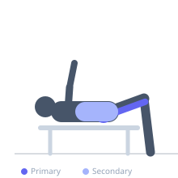
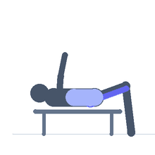

Exercise guide / Reverse Hyperextension
Reverse Hyperextension
The reverse hyperextension is performed face-down on an elevated surface — a reverse hyper machine, a high bench, or a GHD — with the legs hanging free. The legs are swung rearward and upward to full hip extension using gluteus maximus and hamstring strength. Unlike most hip hinge exercises, the spine decompresses during the descent phase, making this exercise popular for simultaneously training the posterior chain and rehabilitating lower back issues.
Primary muscles
gluteus maximus
hamstrings
Secondary muscles
erector spinae
Stabilizers
transverse abdominis
adductors
Equipment
Hyperextension Bench (45°)


Starting position
- Lie face-down on a hyperextension bench or elevated surface with hips at the edge, legs hanging straight down. Hold the handles or grip the bench edge securely.
Setup
- Position the hips at or just past the pad edge so the legs can hang freely. Grip the bench or handles firmly. For added load, hold a dumbbell between the feet.
Steps
- Step 1: Lie prone on the bench with hips at the edge, legs hanging down. Hold the bench firmly.
- Step 2: With control, raise both legs backward and upward by extending the hips — squeeze the glutes.
- Step 3: Raise until the legs are parallel to the floor or slightly above — no hyperextension of the lumbar spine.
- Step 4: Hold briefly at the top.
- Step 5: Lower the legs slowly under control, allowing the spine to gently decompress at the bottom.
Coaching cues
- Squeeze the glutes — not the lower back — at the top
- Let the legs drop slowly — don't just fall
- Control the movement — no swinging
Breathing
- Exhale as you raise the legs. Inhale as you lower.
Range of motion
- Legs hang toward the floor at the bottom. Raise to parallel with the floor at the top — not higher.
Tempo
- 2-1-3-0 (slow, controlled lowering)
Common mistakes
- Swinging the legs with momentum — the movement should be controlled, not ballistic
- Hyperextending the lumbar spine at the top — stop when the legs are parallel
- Not holding the bench firmly — the torso must be anchored
Safety
- Avoid excessive lumbar hyperextension at the top
- If you have acute lower back pain, consult a professional before performing this exercise
Training
- strength: 6–10 reps
- hypertrophy: 10–20 reps
- endurance: 15–25 reps
- strength: 3–4 sets
- hypertrophy: 3–4 sets
- endurance: 2–3 sets
- Rest: {'strength': 120, 'hypertrophy': 60, 'endurance': 45}